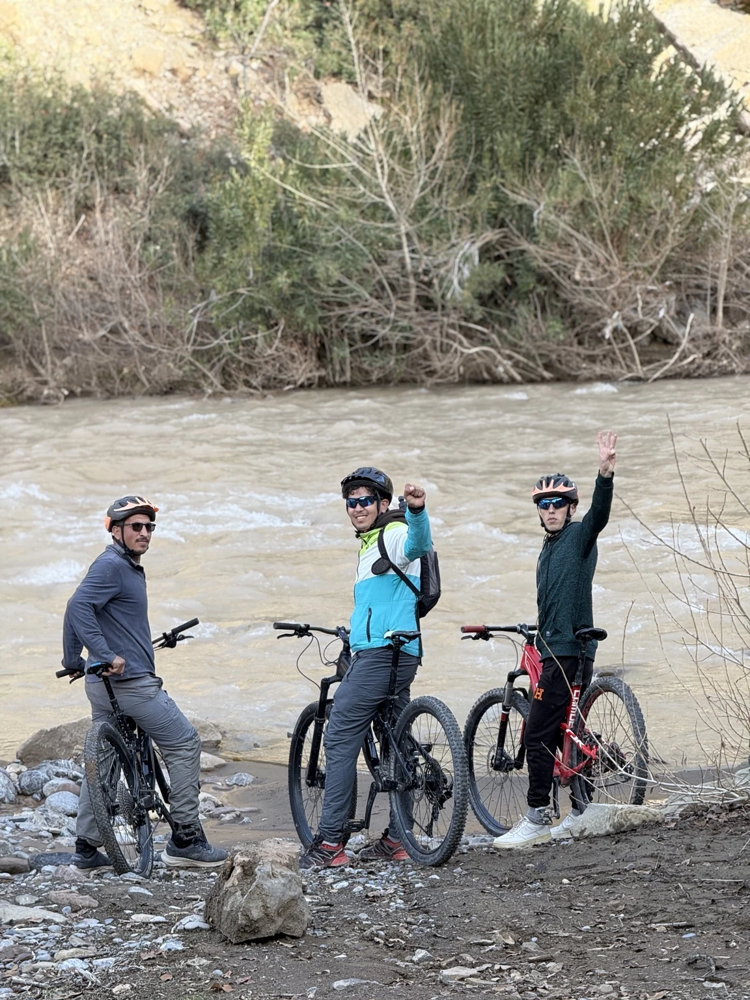

QUI SOMMES-NOUS ?
D’ici. Passionnés par la montagne.
Imsfrane Cathédrale est une initiative locale de tourisme d’aventure, profondément liée aux montagnes de Msfrane, à Tilouguite et à la vallée de l’Ahansal. Notre attachement à ce territoire guide notre façon d’accueillir les visiteurs et de partager ses paysages.
De la rivière aux sentiers de montagne, nous privilégions les rencontres authentiques, l’attention aux détails et des expériences adaptées aux saisons et aux conditions locales.
